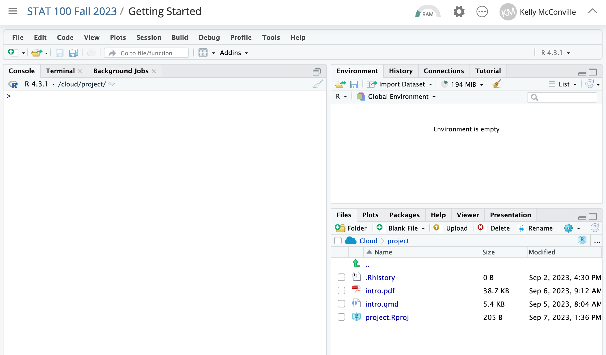
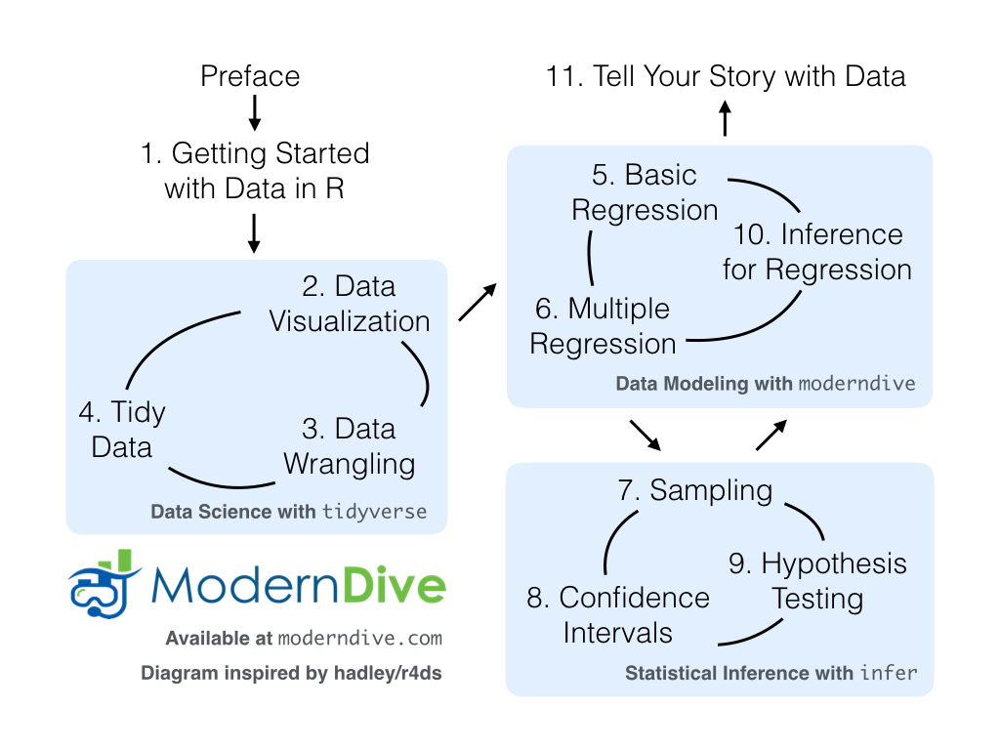
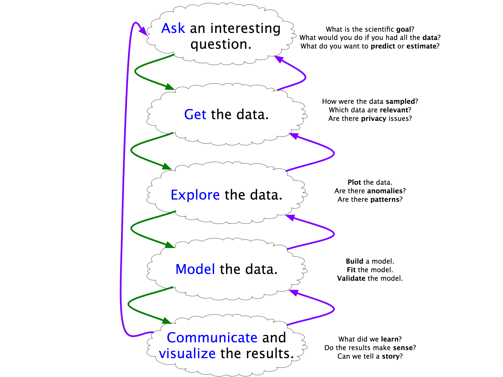
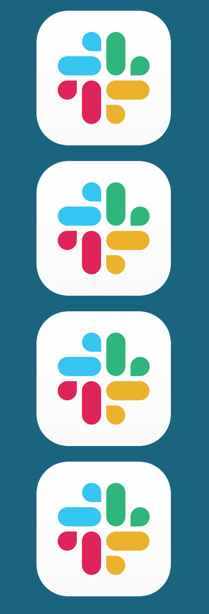
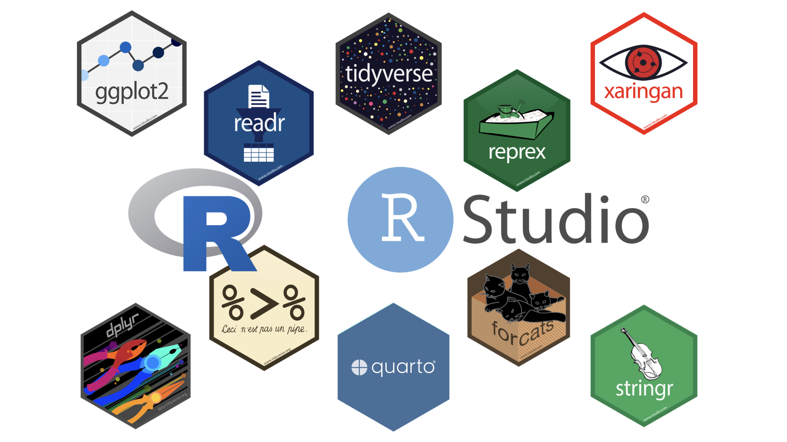
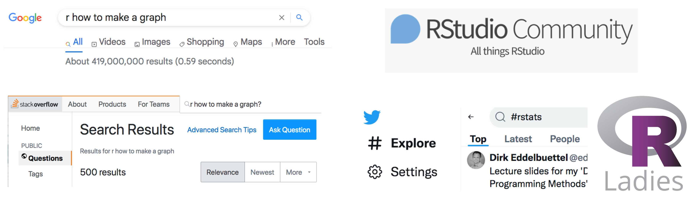

[1] 4Main Components of RStudio Lay-Out


Computing in DATA 100
Kelly McConville
DATA 100
Week 2 | Spring 2026
Discuss course structure & goals (lecture, lab, office hours, assessments…)
Present important course policies (engagement, code of conduct, chatGPT, …)
Get started in RStudio and with Quarto documents



Not a strict set of guidelines.
General structure for extracting knowledge from data.
Consider iteration, context, reproduciblity, and ethics throughout.

Asking a question about course content
Answering someone else’s question
Posting a useful resource and why you found it helpful
Creating an example that illustrates a recent concept
Sharing an article and talking about the stats discussed in the article
Answering our start-of-term ice breaker!
If you have never used Slack before, don’t worry. We are here to help!
Went to looooots of talks on generative AI
Talked to ChatGPT, Gemini, and others
Attended a workshop on data analysis with AI
To generate code to realize fully conceived ideas that aren’t novel or advanced.
Seasoned data scientist can/should:
R and draw conclusions based on the data to reduce risk of perpetuating biases that exist in ChatGPT’s training data.So, ChatGPT might be useful to you near the end of DATA 100 but will be detrimental to your learning during most of DATA 100.
We are going to take a two-pronged approach to AI in the course:
(No AI) For the first 13 weeks of the course, you are not to use AI tools. Therefore, we expect that all work students submit during this period will be their own. This includes code, written work, and oral assessments. During this period, we specifically forbid the use of ChatGPT or any other generative artificial intelligence (AI) tools at all stages of the work process, including preliminary ones, unless the assignment specifically states that it is allowed.
(AI) Near the end of the course, we will address the question of how AI can help in data work. At that point in the semester, you are free to experiment with various AI tools on assignments.
In lecture and on individual assignments, we will make it clear which approach to AI students can take. If it is unclear, make sure to ask.
We expect all members of DATA 100 to make participation a harassment-free experience for everyone, regardless of age, body size, visible or invisible disability, ethnicity, sex characteristics, gender identity and expression, level of experience, education, socio-economic status, nationality, personal appearance, race, religion, or sexual identity and orientation.
We expect everyone to act and interact in ways that contribute to an open, welcoming diverse, inclusive, and healthy community of learners. You can contribute to a positive learning environment by demonstrating empathy and kindness, being respectful of differing viewpoints and experiences, and giving and gracefully accepting constructive feedback.
This Code of Conduct is adapted from the Contributor Covenant, version 2.0.
Attend, attend, attend when you don’t feel ill
Participate in the DATA 100 Slack Workspace
Come to Office Hours
Create study groups with your classmates

R
Novices asking the internet for R help = 😰
Get help from the DATA 100 teaching staff or classmates!
#q-and-a channel.R help online.R-This, R-That, Q-What?
R is the name of the programming language.
RStudio is the pretty interface and is hosted on a Posit Cloud Server.

Quarto is the type of file where we will record all of our work (code, output, narrative).
R! Hop into our Posit Cloud site now.
Environment
Lists items stored in your session.
Will add some items soon!
Files et. al.
Files: Accesses files in that project.
Plots: Contains graphs we create.
Packages: Installs and loads packages.
Help: Displays help files.